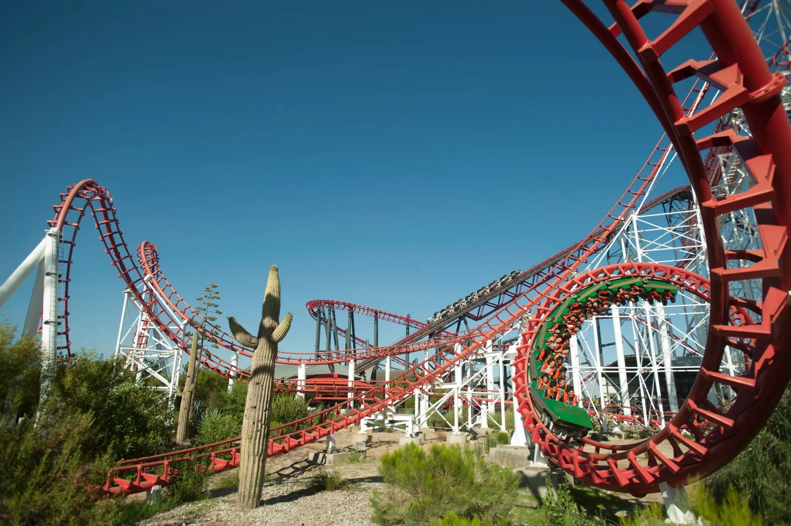
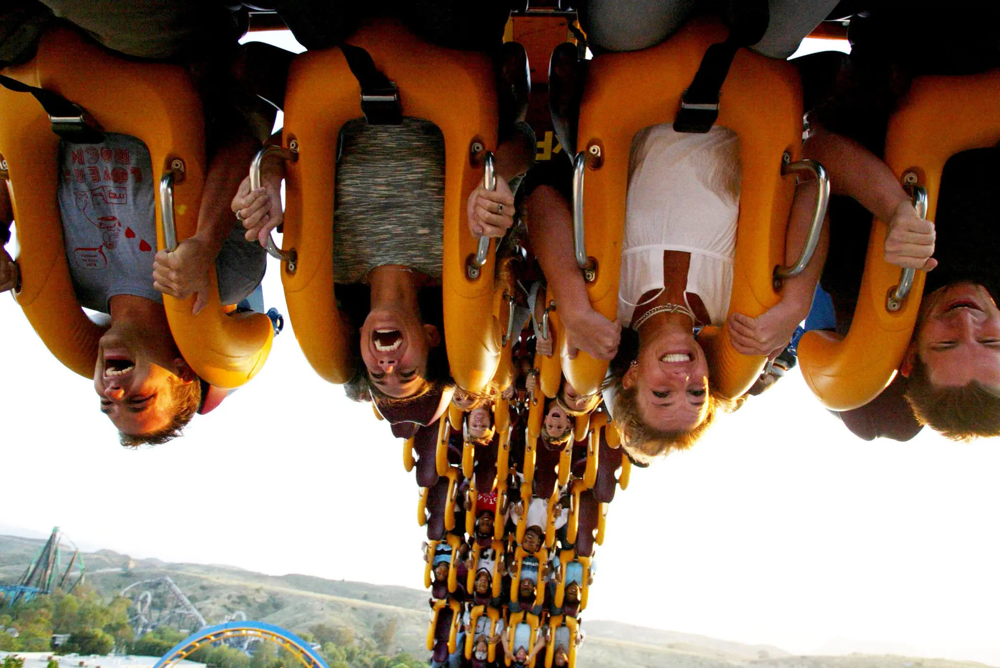
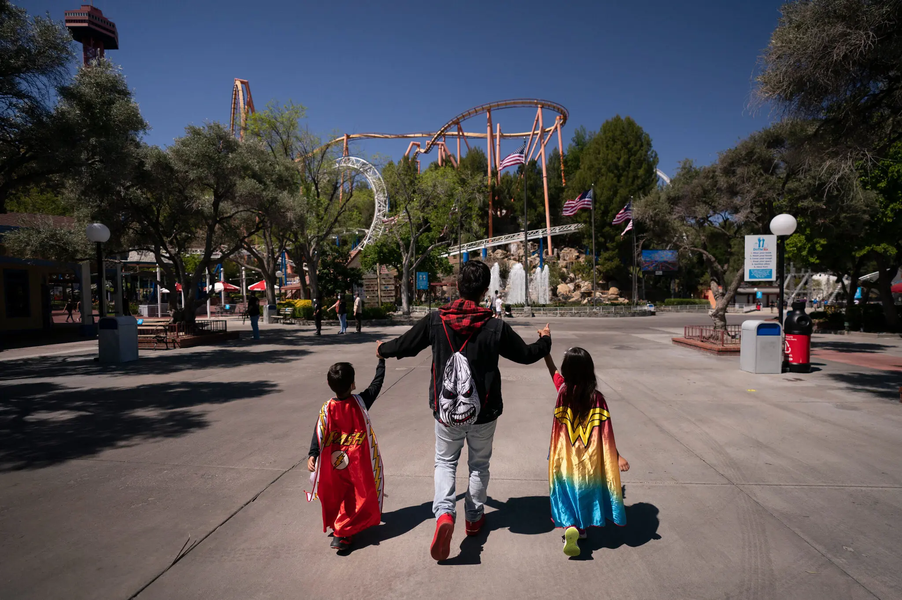

By Hannah Ziegler
Published April 2, 2026
When he was growing up, any time Brad Miller tossed a coin into a fountain, his wish was to visit Six Flags. Mr. Miller, 42, lives a short drive from Six Flags Great Adventure in Jackson Township, N.J. His parents went when it opened in 1974, and now three generations of his family — Mr. Miller has taken his young sons — have made the trip. In recent years, though, the park has deteriorated. The Skyway, a gondola lift that overlooked the park for nearly 50 years, closed in November 2024. Kingda Ka, once the tallest roller coaster on earth, quietly shut down that month. Several other signature rides have closed or struggled with maintenance. Six Flags has announced plans to close or sell several of its 41 amusement and water parks in the next few years as it refocuses on its high-performing parks. The company is responding to industry shifts at a time of economic uncertainty when consumers have more entertainment options than ever closer to home.
“
A higher-income person might downgrade from Disney to Six Flags, but then the person who used to be able to afford Six Flags or go to Six Flags may no longer go.
said Ian Zaffino
an analyst with Oppenheimer
When he was growing up, any time Brad Miller tossed a coin into a fountain, his wish was to visit Six Flags. Mr. Miller, 42, lives a short drive from Six Flags Great Adventure in Jackson Township, N.J. His parents went when it opened in 1974, and now three generations of his family — Mr. Miller has taken his young sons — have made the trip. In recent years, though, the park has deteriorated. The Skyway, a gondola lift that overlooked the park for nearly 50 years, closed in November 2024. Kingda Ka, once the tallest roller coaster on earth, quietly shut down that month. Several other signature rides have closed or struggled with maintenance. Six Flags has announced plans to close or sell several of its 41 amusement and water parks in the next few years as it refocuses on its high-performing parks. The company is responding to industry shifts at a time of economic uncertainty when consumers have more entertainment options than ever closer to home.
When he was growing up, any time Brad Miller tossed a coin into a fountain, his wish was to visit Six Flags. Mr. Miller, 42, lives a short drive from Six Flags Great Adventure in Jackson Township, N.J. His parents went when it opened in 1974, and now three generations of his family — Mr. Miller has taken his young sons — have made the trip. In recent years, though, the park has deteriorated. The Skyway, a gondola lift that overlooked the park for nearly 50 years, closed in November 2024. Kingda Ka, once the tallest roller coaster on earth, quietly shut down that month. Several other signature rides have closed or struggled with maintenance. Six Flags has announced plans to close or sell several of its 41 amusement and water parks in the next few years as it refocuses on its high-performing parks. The company is responding to industry shifts at a time of economic uncertainty when consumers have more entertainment options than ever closer to home.
Where all 41 Six Flags parks are located across North America
Six Flags executives acknowledged in a February earnings call that the company missed expectations last year, but John Reilly, the company’s new chief executive, said there was still “underlying demand” for its parks. “We’re one of the best-value dates out there for family entertainment,” Gary Rhodes, a company spokesman, said in an email. With Disney and Universal catering to high-income customers, and niche options like Peppa Pig and Legoland theme parks winning over young families, where does that leave Six Flags?
Six Flags visits were once a summer ritual
Waiting in winding lines at Six Flags on a blistering summer day was once a rite of summer. Ryan Frances-Wright, 38, got his first job at Six Flags Magic Mountain outside Los Angeles in 2005, and as each of his friends learned to drive, they would be there from dawn to dusk. Trips to the park gave him a taste of freedom. “It was a place that I could go with my friends that was away from the parents and our own thing,” he said. Readers who responded to a New York Times call for their Six Flags memories said the amusement parks gave them respite from turbulent periods of their lives, including breakups and medical diagnoses.
“
Going back to those parks now is almost always a little bit of a disappointment,”
said Mr. Frances-Wright
who visitied Six Flags in the 2010s
Dom Giunta, 28, who has worked at Six Flags Great Adventure in New Jersey for half his life, considers the park his hometown. As a teenager, Six Flags helped him find his place at a fickle age. He would visit on days off to people-watch and spend time with the co-workers who became his best friends. Over the past 14 years, they have watched him graduate from college, get married and become a father. “Great Adventure history is Jackson history, is my history,” he said. Laine Cotton grew up visiting Six Flags Over Texas and recalled hunting for park coupons on Dr Pepper and Coca-Cola cans. “Finally being tall enough, and brave enough, to ride the double-looped Shock Wave roller coaster was a rite of passage for my generation,” Ms. Cotton said. But as Mr. Frances-Wright visited Six Flags in the 2010s, the atmosphere went from thrilling to “dirty and grimy.”
A Six Flags boom and the Coaster Wars
When the first Six Flags park opened in Texas in 1961, adult admission was $2.75, and hamburgers cost 50 cents. The Austin American that year said it was “as much of a continuous theatrical production as an amusement park,” with 600 costumed workers and coasters that could handle 15,000 riders an hour.
By 1980, Six Flags owned two parks in Texas and others in Georgia, Missouri, New Jersey and California. By 2000, there were 38 Six Flags properties, and they brought in 46 million visitors that year.
Six Flags was an affordable, accessible day trip for families and a no-fuss alternative to destination parks. The company said in a 2024 presentation to investors that about 250 million people lived within 100 miles of its parks. Middle-income families who view Disney World as a bucket-list destination are the core audience, said Carissa Baker, an assistant professor of theme park and attraction management at the University of Central Florida.
The parks had cultural cachet: Magic Mountain was featured in movies including “National Lampoon’s Vacation” and “Encino Man,” and the TV shows “Buffy the Vampire Slayer” and “Beverly Hills, 90210.”

Picture of Viper, in Magic Mountain Six Flags, Los Angeles, CA.
One Super Bowl Sunday in the early 1990s, Michael D’Anvers and his best friend took advantage of thin crowds at Magic Mountain to ride Viper, one of the park’s most popular roller coasters. They spent the day making silly faces for the cameras, and getting back in line for encores. “To this day I could still sketch every loop to loop, every twist and turn” of Viper, he said.
Soon after Six Flags Fiesta Texas opened in San Antonio in 1992, Melissa Bailey and her best friend conquered the 179-foot-tall Rattler, which made them “the coolest second-graders.” She and her classmates spent summers there for the next decade.By 1980, Six Flags owned two parks in Texas and others in Georgia, Missouri, New Jersey and California. By 2000, there were 38 Six Flags properties, and they brought in 46 million visitors that year.
“Nothing was better than screaming with your best friends on roller coasters,” she said. A fierce marketing campaign in the early 2000s — featuring the dancing older man known as Mr. Six — heightened the fervor. Celebrities, including Britney Spears, Justin Bieber and Rihanna, happily screamed on rides and posed with mascots.

Britney Spears, second from right, and her brother, Bryan Spears, left, riding the Scream roller coaster at Six Flags Magic Mountain in California in 2003.
From the late 1980s to the early 2000s, Six Flags and Cedar Fair waged what became known as the Coaster Wars, fighting to outdo each other by building bigger, faster and scarier rides. When Goliath, an 85-mile-per-hour coaster, opened at Six Flags Magic Mountain in February 2000, Cedar Point in Sandusky, Ohio, responded three months later with Millennium Force, which was faster and the first coaster to top 300 feet.
In May 2003, Top Thrill Dragster at Cedar Point became the tallest and fastest ride on earth — until two years later, when Six Flags Great Adventure unveiled Kingda Ka, which was 36 feet taller and 8 m.p.h. faster. Jake Arlow, 28, vividly remembers a sweltering summer day spent mustering the confidence to ride Kingda Ka.
“I haven’t been to any Six Flags park since the pandemic, and I don’t know if I’ll ever go back to one, but I will always remember conquering Kingda Ka.”
Six Flags Great Adventure Yearly Attendance Figures
Debt, the recession and the pandemic brought challenges.
Building a roller coaster can cost tens of millions of dollars. The one-upmanship of the park chains, which eventually “topped out what your average adult American can handle,” wasn’t sustainable, said Jill Chihak, a professor at Frostburg State University who researches amusement parks.
Six Flags borrowed an extraordinary amount of money during its expansion, and in 2009, during the financial crisis, filed for bankruptcy. Just as attendance at Six Flags parks was rebounding, pandemic shutdowns and social distancing “threw a monkey wrench” into the industry, said Martin Lewison, an associate professor of business management at Farmingdale State College who is known as “Professor Roller Coaster.”
Responding to high inflation, Six Flags hiked prices and slashed discounts, Dr. Lewison said, alienating customers. In 2022, its chief executive at the time lamented in an earnings call that the parks had turned into “a cheap day care center for teenagers.”
Parks fight for discretionary dollars.
While Disney and Universal parks have cornered the market for high-income consumers, the lower- and middle-income families who once opted for Six Flags sometimes choose entertainment closer to home, analysts said.
Amusement parks are still “a really robust industry,” Dr. Baker, the University of Central Florida professor, said. But, she added, “There has never been a more crowded landscape of leisure activities.” Entertainment companies are fighting for “that leisure discretionary dollar,” C. Patrick Scholes, an analyst at Truist Securities, said. Six Flags has lost market share to smaller parks that cater to young families, including Legoland and Peppa Pig properties. Universal is also opening a children’s resort in Frisco, Texas, less than an hour from Six Flags Over Texas.
For now, Six Flags is refocusing on its high-performing parks. After closing a park in Maryland in November and announcing plans to close a park in California, the company said last month that it had sold Michigan’s Adventure, Six Flags St. Louis and five other parks for $331 million to “simplify” its portfolio and pay down its debt.
Since the merger with Cedar Fair, Six Flags has invested more than $50 million in improvements, including better maintenance, a new ticketing system and mobile app, and more efficient concessions, Mr. Rhodes, the company spokesman, said. A group of activist investors teamed up with the Kansas City Chiefs tight end Travis Kelce to push for improvements. Many families still visit their local park, even if they bristle at price increases. Ryan Rayborn spends less than $1,000 a year on passes to Six Flags Over Georgia for his family of four, viewing it as a great deal. But he said he was more likely to balk at small price hikes there than at destination parks.
“When prices do start going up, I’m like, ‘Ugh,’ where at Disney, maybe you’re numb to it,” he said.
